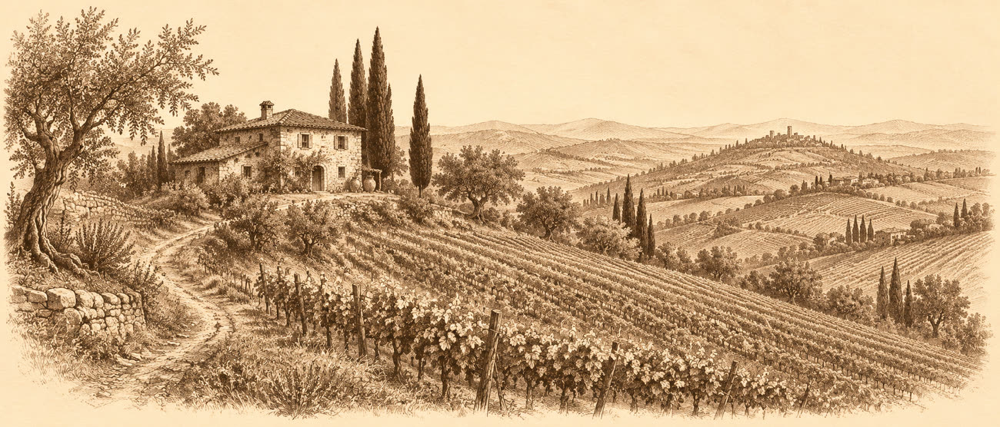

Our story
It starts with the embers.
Before the first table is laid, oak logs are already burning in our hearth. On the workbench, sheets of pasta wait for the knife. This is how an evening at Brasca begins.
Find our tableGreve in Chianti, Tuscany
Wood-fired Tuscan cooking, handmade pasta
and the quiet rhythm of the Chianti hills.
Our story
Before the first table is laid, oak logs are already burning in our hearth. On the workbench, sheets of pasta wait for the knife. This is how an evening at Brasca begins.
Find our tableFrom the kitchen notebook
The ragù takes the afternoon. The ribbons take a knife, a floured board and a little practice. Here’s how we make the pasta.
For two · 200 g tipo 00 flour · 2 large eggs

Visit us
Greve in Chianti
Tuscany, Italy
Wednesday to Sunday
19:00 – 22:00